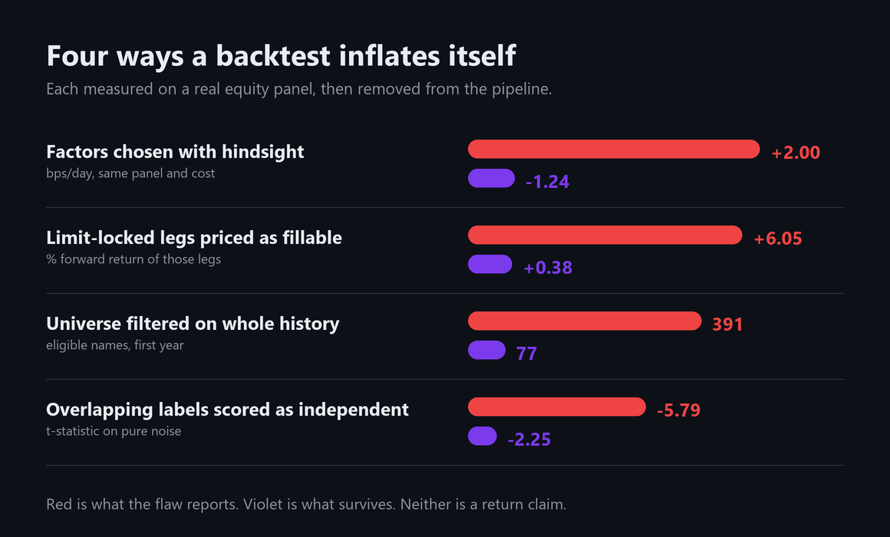

Auditable alpha research, built to falsify itself.
A compact autonomous research framework for causal factor synthesis, neutral portfolio evaluation, multiple-testing correction, and decision-focused ranking— without broker access or automatic strategy promotion.
The live record, redrawn every day
A frozen specification (dea0e608) holds the single best-ranked eligible name
and rotates every session. Fetching, selection, scoring and redrawing all run on a GitHub
runner from public data, so a reader can rerun it and reach the same name. A separate job
re-fetches the index series and fails if any committed benchmark return no longer matches
its source; it writes nothing, because a verifier that can rewrite the file it verifies is
not a verifier.
Two records run and answer different questions: this one-name, one-session rotation
published in advance, and a ten-name, ten-session record (b19bbc74,
c0768449) carrying the four factors that survived the 456-candidate search.

The dashed, shaded span on the left proves nothing, and it is drawn that way on purpose. Those four factors were chosen from a 456-candidate search whose data overlaps that window, and on this panel the selection step alone is worth about 3 bps per day — more than most published equity-factor results. An in-sample curve that beats every index is what a selected strategy always looks like.
Only the solid span to the right of the divider is evidence, it begins the day the specification was frozen, and at the start there is almost none of it. The strategy line is a raw return net of realised cost so that it is comparable to an index; the excess line answers a different question and is labelled separately, because plotting an excess against a raw index is the oldest trick in the genre.
The name is published before the session it applies to. Each evening the frozen specification selects one name from roughly 4,700 eligible, and it is committed here with a timestamp, at the top-right of the chart, before that market opens. A record scored afterwards always invites the question of whether the rule moved once the outcome was visible. One committed in advance cannot: it can be shown to be wrong, but never edited. The file is append-only — next_pick.json, published_picks.jsonl, rotation.jsonl.
Research only. This is a record of what a frozen rule selected, published to test that rule in public. It is not advice, not a recommendation, and no order-placement path exists anywhere in the codebase — CI asserts that on every commit.
What the search actually produced
A worked run, end to end: 456 published formulaic factors (Kakushadze 101, GTJA 191, Qlib 158, academic) over a point-in-time A-share panel, ranked only on the training window by the net-of-cost excess of a ten-name book, then reported on the untouched test window. Ten-session hold, 30 bps round-trip cost, limit-locked legs dropped rather than priced.
| # | factor | formula | test net | >10% odds | max DD |
|---|---|---|---|---|---|
| 1 | qlib158/rsqr60 | ts_corr(close, t, 60)² | +0.36% | 1.13× | −17.9% |
| 2 | gtja191/alpha_120 | rank(vwap−close)/rank(vwap+close) | −0.33% | 0.42× | −21.1% |
| 3 | alpha101/alpha_042 | identical formula to #2 | −0.33% | 0.42× | −21.1% |
| 4 | qlib158/ma60 | ts_mean(close, 60)/close | −0.44% | 1.31× | −23.5% |
| 5 | qlib158/sumn60 | ∑max(−Δclose,0)/∑|Δclose| | −0.50% | 1.31× | −28.1% |
One of five survives costs, against an eligible universe returning
+0.82% per hold. Three details matter more than the ranking. Rows 2 and 3 are
the same factor — GTJA-191 #120 and Kakushadze #42 are identical formulas
published under different names, so merging libraries and counting the total as
independent trials overstates the search's breadth. Row 4 has a rank-IC
t-statistic of 9.95 and still loses money, because it turns the book over fast
enough for costs to consume the edge: significance and tradability are different
questions. Row 1 is not a direction signal at all —
rsqr60 measures how cleanly a price has trended, not which way.
Across the full top ten, four are net-positive; the best is academic/illiq
at +0.76% per hold with a −10.5% drawdown, and the low-turnover names dominate.
None of it is counted as evidence. Selected from 456 candidates, a
deflated Sharpe test at that trial count returns consistent_with_luck, and
ranking by a different but equally defensible train-side criterion produces a different
top five — which is exactly the instability this framework exists to expose. What
settles it is forward data, not more history.
Four biases, measured and removed
Each was quantified on a real equity panel while building this pipeline, and each is large enough to invent a strategy on its own. Red is what the flaw reports; violet is what survives once it is removed. Neither column is a return claim.

The first row is the one worth sitting with. Same panel, same cost model, same
portfolio construction — only the rule for choosing factors differs, and the gap
is about 3 bps/day. That exceeds most published equity-factor results, which is
why a pipeline unable to audit its own selection step cannot separate a discovery from
an artifact of choosing. The mechanism reproduces on synthetic data containing no
signal at all: an information ratio of 4.53, manufactured in ten seconds by
examples/selection_artifact.py.
Status, stated plainly: candidates are generated and fully evaluated; none has yet cleared the counterfactual, walk-forward and multiple-testing gates together. That is the gates working on a price-and-volume library, not the engine failing to run — and unlike most backtests, this one reports the count.
Research architecture
Discovery is separated from acceptance. Candidate generation receives training data; validation and shadow windows are structurally excluded from parent selection and refitting.
Scientific primitives
The library exposes compact reference implementations. A primitive is available for preregistered falsification; availability is not evidence of predictive power.
Causal Hidden Markov Filter
Forward-filtered state probabilities based on Hamilton-style regime switching. Full-path Viterbi labels are excluded from online-safe features.
EWS + BOCPD
Critical-slowing statistics and Bayesian run-length inference diagnose transitions without claiming directional alpha.
Koopman / DMD Residual
A fixed historical window estimates a local linear operator and reports the unexplained dynamical residual.
Simplified LPPLS
Fixed-grid calibration reports residual and critical-time stability distributions—never a single deterministic crash date.
Black–Litterman
Combines an equilibrium prior with uncertain views. Shrinkage improves conditioning; it cannot create information.
Triple Barrier
Profit, loss, and time barriers standardize outcomes. Future-dependent labels are permanently separated from features.
Bounded Top-K Pairwise Loss
Optimizes the ranking boundary directly under simplex constraints and exposes instability with complete-block replicas.
Proper Scoring Diagnostics
Brier, LogLoss, AUC, ECE, and probability buckets evaluate discrimination and calibration separately.
Dependence-aware Evidence Lab
A standalone falsification workbench for a searched family of factors, forecasts, or policies. One shared resampling design preserves serial and cross-candidate dependence, then tests both the global winner and individual survivors.
Stationary Bootstrap
Geometrically distributed circular blocks preserve weak serial dependence and drive confidence intervals and every joint test from one frozen design.
White Reality Check
Tests whether any member of the full searched family outperforms a frozen benchmark after recentering the joint bootstrap distribution.
Romano–Wolf Step-down
Studentized max-t inference controls family-wise error while retaining the measured dependence between competing candidates.
BH / BY q-values
Reports both standard false-discovery control and the conservative arbitrary-dependence correction—without treating either as deployment authority.
Research basis
The code follows published methods while retaining explicit implementation boundaries.
Probability of Backtest Overfitting
CSCV estimates how often model selection reverses out of sample after searching many alternatives. Bailey et al.
Deflated Sharpe Ratio
DSR adjusts apparent performance for trial count, return non-normality, and selection bias. Bailey & López de Prado
Predict-then-Optimize
Downstream decision loss can be more relevant than point-prediction error. Elmachtoub, Liang & McNellis
Strictly Proper Scoring Rules
Proper scores incentivize honest probability forecasts and separate confidence from ranking. Gneiting & Raftery
Markov-Switching Models
Latent discrete states provide a tractable representation of regime-dependent dynamics. Hamilton
Formulaic Alpha Synthesis
Modern research combines formula generation with dynamic factor selection; this repository uses a smaller audited DSL. AlphaForge
Reality Check
The winner of a specification search must be tested against the joint null, not as a solitary preregistered strategy. White
Step-down max-t
Studentized joint resampling can control family-wise error while exploiting dependence to improve power. Romano & Wolf
Factor research surface
| Domain | Research objects | Primary audit |
|---|---|---|
| Price and volume | Momentum, reversal, volatility, beta, liquidity | Turnover, crowding, cost sensitivity |
| Fundamentals | Value, profitability, growth, cash conversion, balance-sheet safety | Disclosure timing, restatements, survivorship |
| Hybrid mechanisms | Quality × risk, value × reversal, growth × momentum | Incremental value over both component legs |
| State and dynamics | HMM, EWS, BOCPD, DMD, LPPLS | True predictive increment versus mechanical abstention |
Research integrity contract
{
"status": "diagnostic_only_research_only_not_trading",
"orders": [],
"automatic_trading_changes": []
}